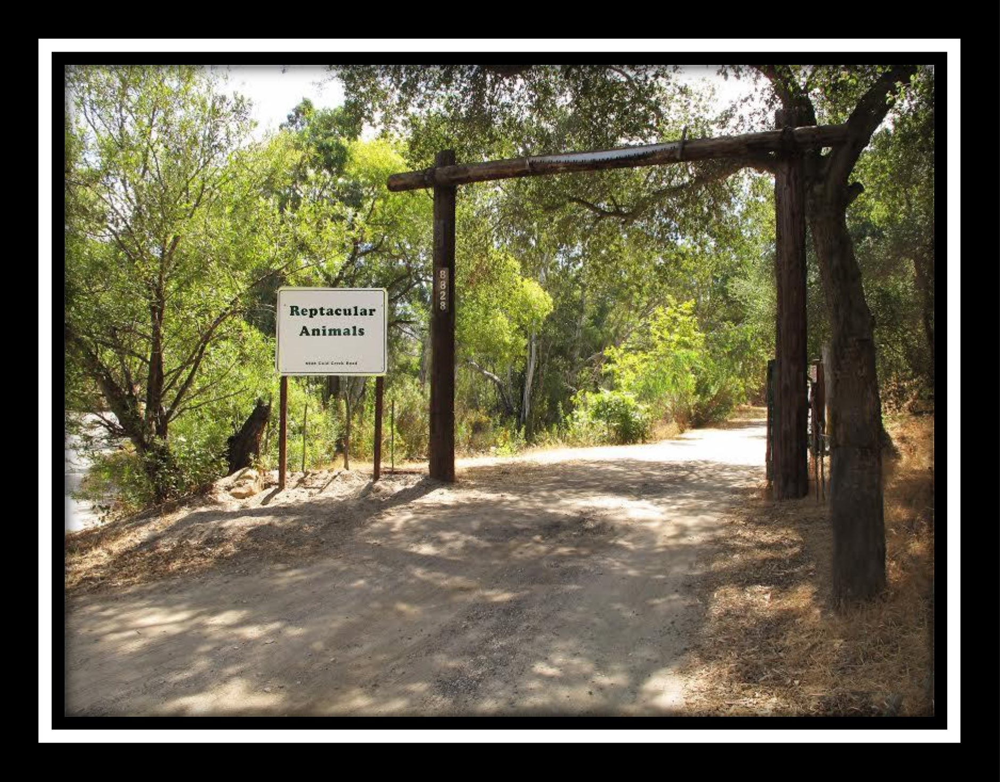

Time
Please arrive by 4PM on Sunday, October 14th, 2018.
How to get there
The address is 8828 Gold Creek Rd., Sylmar, 91342 and the front looks like:

Using a GPS works fine, but if you are worried about missing the venue and have no cell service, you can follow these directions once you get onto Osbourne Street.
- Go past the 7-11 on the left, past the California Polo Club on the left, past Middle Ranch on the right, past a worm farm on the right, and past the Padilla Ranch on the right.
- Once you pass the big white and blue sign for the Padilla Ranch, you will see a street sign that says Gold Creek Road.
- You will make a right onto that street (a right turn is your only option).
- At that point you will go up a mountain; you will be on this road for about 1 mile.
- You will pass a park called "Oak Spring," and our main entrance will be about 100 yards from the park. You will soon see a large, white sign that says "Reptacular Animals" on it.